Full Year 12 HSC Health & Movement Science · Focus Area 1 + 2 · 9 topics
Tap any topic to expand. Learn the bold terms and always link a fact to a consequence — that's where the marks are. Diagrams are from your ATAR Notes summary book.
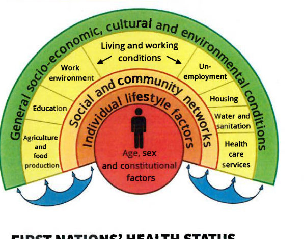
| Feature | Cardiovascular disease | Cancer |
|---|---|---|
| Mortality | ~45,000 deaths (2022); a leading cause of death | ~32% of the fatal disease burden |
| Morbidity | Leading disease burden for males, 7th for females | ~17% of total disease burden — the largest single group |
| Risk factors | Smoking, high BP, diabetes, obesity, family history | Socio-economic disadvantage, age, smoking, obesity |
| Protective factors | Low cholesterol/BP, less stress & smoking, healthy diet | Healthy diet/activity/weight, limit alcohol & sun, vaccination |
| Scheme | Sustainability | Access | Equity |
|---|---|---|---|
| Medicare | Subsidising only certain services preserves funds | Care for all, regardless of ability to pay | Safety Net gives extra help to frequent users |
| PBS | Medicines reviewed so the highest-benefit ones are prioritised | All citizens/residents access subsidised medicines | PBS Safety Net protects against large costs |
| NDIS | Individualised funded plans widen access | Better access for people with lifelong disability | Bigger needs receive more assistance |
| Private health | Incentives to insure reduce public-system strain | Younger people pay less to encourage uptake | Rebate gives lower-income earners more help |
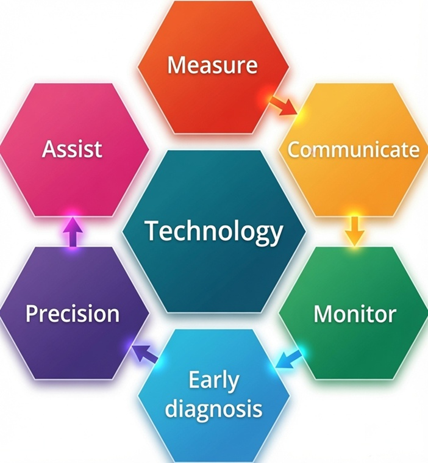
| Opportunities | Challenges |
|---|---|
| Greater personalisation of care | Digital divide — limited access without literacy/devices |
| Remote access & cost saving | Privacy & data-security concerns |
| Facilitates preventative medicine | System interoperability between providers |
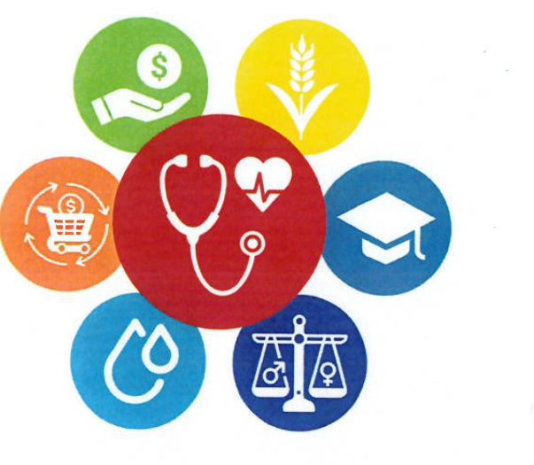
| SDG | Aim | Health focus |
|---|---|---|
| 3 — Good Health & Wellbeing | Healthy lives & wellbeing at all ages | Cut maternal/child mortality, combat NCDs, mental health, universal coverage |
| 4 — Quality Education | Inclusive, equitable education | Higher health literacy → better health choices |
| 10 — Reduced Inequalities | Reduce income/social inequality | Close gaps for First Nations, rural & CALD communities |
| 11 — Sustainable Cities | Inclusive, safe, resilient cities | Green space, clean air, active transport, healthcare access |
| Recreational athletes | Elite athletes |
|---|---|
| Increases motivation by tracking improvement | Precisely measures sport-specific attributes (VO₂ max, anaerobic threshold) |
| Highlights weaknesses to target in the program | Informs competition, preparation & recovery plans; supports data-driven coaching |
| Helps set realistic, achievable goals | Identifies injury risk and guides preventive strategies |
| Adaptation | Principle applied | Effect on performance |
|---|---|---|
| Resting heart rate ↓ | Progressive overload, specificity | Aerobic training lowers resting HR → more efficient heart |
| Stroke volume / cardiac output ↑ | Progressive overload, thresholds | More blood per beat → better O₂ delivery & endurance |
| VO₂ max & lung capacity ↑ | Progressive overload, specificity | More efficient intake and use of oxygen |
| Haemoglobin ↑ | Aerobic training (specificity) | More O₂ transported → improved endurance |
| Muscle hypertrophy | Resistance, overload, specificity | Bigger, stronger muscle → more power & force |
| Fast-twitch fibres ↑ | Anaerobic/resistance, specificity | More power & speed for explosive sport |
| Slow-twitch fibres ↑ | Aerobic training, overload | Better endurance & fatigue resistance |
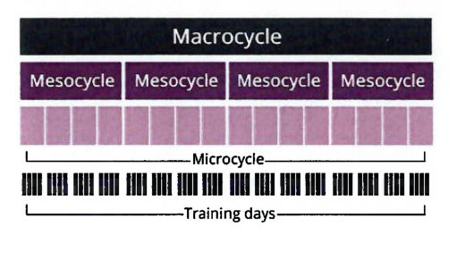
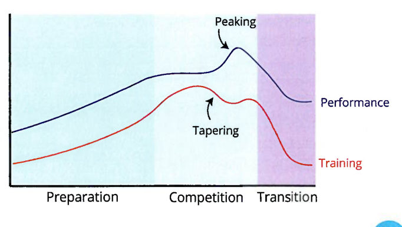
| Component | Individual sport | Group sport |
|---|---|---|
| Health & safety | Tailored to the athlete's history & risk | Accounts for many players, collisions & group dynamics |
| Aim of session | Personal skill & performance goals | Team coordination, tactics & shared objectives |
| Skill instruction | One-on-one, tailored to technique | Group drills — teamwork, positioning, passing |
| Strategies & tactics | Athlete's role (pacing, serve placement) | Team tactics — formations, set plays, attack/defence |
| Reflection/evaluation | Detailed individual feedback, video analysis | Team debrief + individual feedback; assess cohesion |
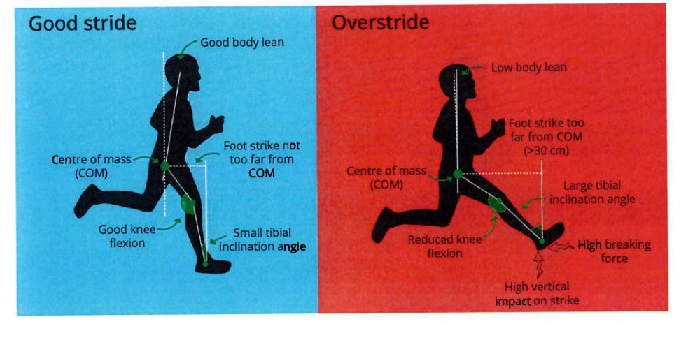
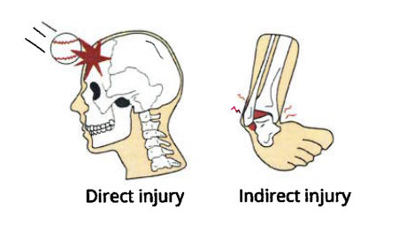
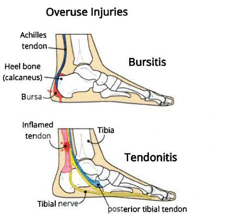
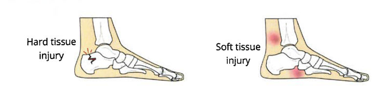
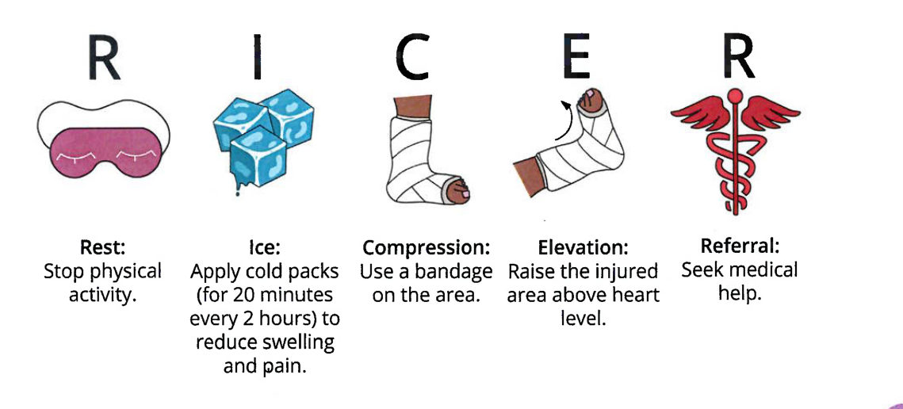
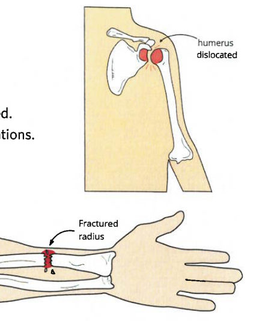
⚡ Practice MC
Pick a topic. Each question gives instant feedback and an explanation. Aim for 80%+ before the exam.
✍️ Written Answer Scaffolds
HMS written responses reward structure and linking. Use these scaffolds for any question at that mark value.
Most 12-markers ask you to compare two things across the whole course — e.g. a yearly training program for an individual vs a group athlete, or how the healthcare system balances access vs sustainability. This structure works for any compare/analyse task.
Define the key term and state the two cases you'll compare.
Take your first comparison point and apply it to both athletes with specific detail.
Spend the most marks on your strongest contrast.
One judgement sentence naming why all the differences exist.
A 5-marker usually asks you to explain or compare one concept, often across two contexts (individual vs group, or two schemes/technologies).
Name and define the concept with correct terminology.
Apply it to the first context with a specific action and outcome.
Apply it to the second context with a different application.
One sentence tying both cases to improved performance, health or reduced risk.
A 3-marker wants define + explain + example — three clear sentences, one mark each.
What is it? Use the correct term.
How/why does it work? Name the mechanism.
A sport-specific example with a named outcome.
A timed mix drawn from across all 9 topics.